Come funziona EasyQSO, passo per passo, con screenshot. (I dati mostrati sono d'esempio.)How EasyQSO works, step by step, with screenshots. (The data shown is sample data.)
EasyQSO è un logbook web per radioamatori, pensato per registrare velocemente i contatti anche durante i DX contest. Ogni utente ha un account personale: i QSO sono salvati sul server e sono accessibili da qualsiasi dispositivo.
💡 In alto a destra della schermata di login i pulsanti IT / EN cambiano la lingua. Dopo l'accesso vale la lingua salvata nel tuo account (vedi Il mio account).
EasyQSO is a web logbook for radio amateurs, built to log contacts quickly even during DX contests. Every user has a personal account: QSOs are stored on the server and available from any device.
💡 In the top right of the login screen the IT / EN buttons switch the language. After signing in, the language saved in your account applies (see My account).
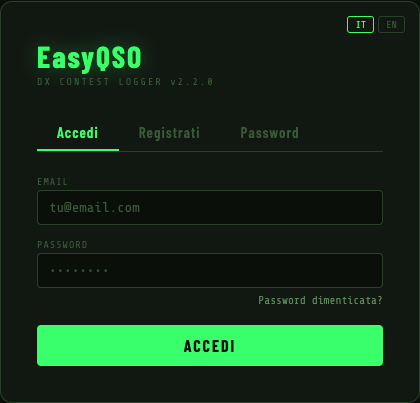
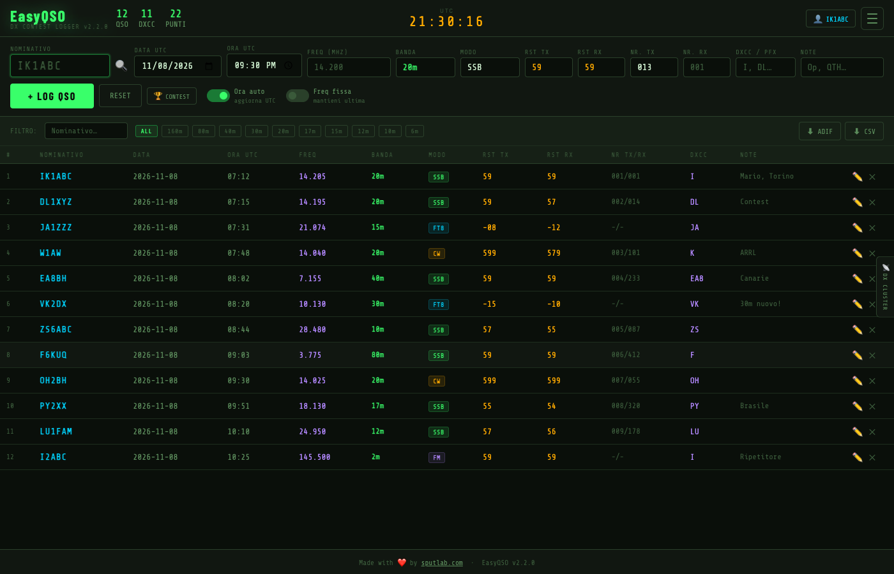
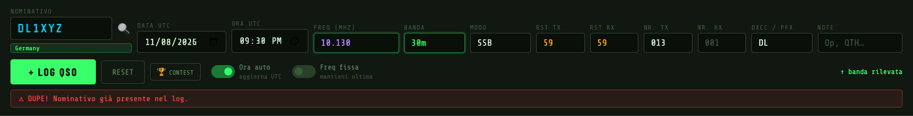
| Campo | Come funziona |
|---|---|
| Nominativo | Scrivilo in maiuscolo o minuscolo: l'entità DXCC compare sotto il campo e il prefisso è riempito da solo. 🔍 apre la ricerca su QRZ.com. |
| Data / Ora UTC | Con Ora auto attiva si aggiornano da sole a ogni nuovo QSO. |
| Freq (MHz) | Digita la frequenza (es. 14.205): la banda è rilevata automaticamente. Fuori dalle bande amatoriali compare “— fuori banda”. |
| Modo | SSB, CW, FT8, FT4, AM, FM, DIGI, RTTY. |
| RST TX / RX | Preimpostati a 59. |
| Nr. TX / RX | Numeri progressivi per i contest: il tuo seriale si incrementa da solo. |
| DXCC / Note | Prefisso (automatico, modificabile) e note libere (nome operatore, QTH…). |
Premi Invio in qualsiasi campo (o + LOG QSO) per salvare. RESET svuota il form.
| Field | How it works |
|---|---|
| Callsign | Type it in upper or lower case: the DXCC entity appears under the field and the prefix is filled in automatically. 🔍 opens the QRZ.com lookup. |
| UTC date / time | With Auto time on they update on their own after each QSO. |
| Freq (MHz) | Type the frequency (e.g. 14.205): the band is detected automatically. Outside the amateur bands “— out of band” is shown. |
| Mode | SSB, CW, FT8, FT4, AM, FM, DIGI, RTTY. |
| RST TX / RX | Preset to 59. |
| Nr. TX / RX | Serial numbers for contests: your own serial increments automatically. |
| DXCC / Notes | Prefix (automatic, editable) and free notes (operator name, QTH…). |
Press Enter in any field (or + LOG QSO) to save. RESET clears the form.
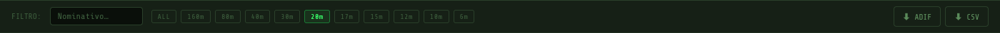
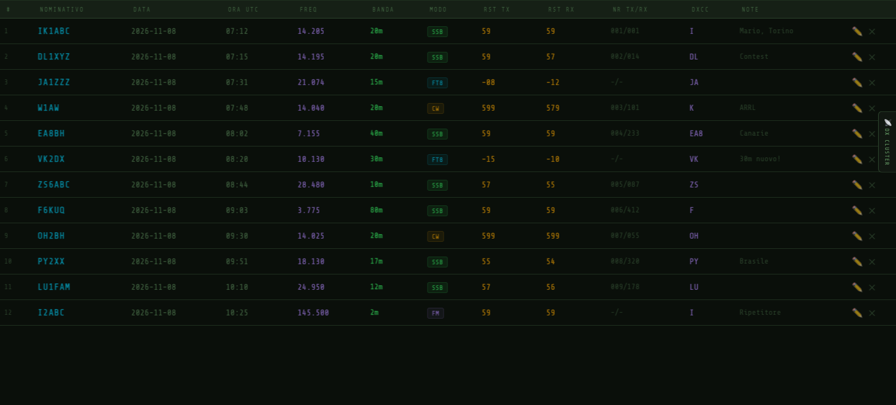
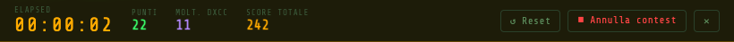
Premi 🏆 CONTEST sotto il form per avviare il cronometro e il calcolo dello score in tempo reale.
| Pulsante | Cosa fa |
|---|---|
| ↺ Reset | Il timer riparte da zero, il contest resta attivo. |
| ⏹ Annulla contest | Chiede conferma, poi ferma e azzera il timer, chiude la barra e riporta lo score a 0. I QSO nel log non vengono toccati. |
| ✕ | Nasconde solo la barra (il timer resta valido: riaprendo con 🏆 CONTEST riprende da dove era). |
Press 🏆 CONTEST below the form to start the stopwatch and live score calculation.
| Button | What it does |
|---|---|
| ↺ Reset | The timer restarts from zero, the contest stays active. |
| ⏹ Cancel contest | Asks for confirmation, then stops and resets the timer, closes the bar and sets the score back to 0. QSOs in the log are not touched. |
| ✕ | Only hides the bar (the timer stays valid: reopening with 🏆 CONTEST resumes where it was). |
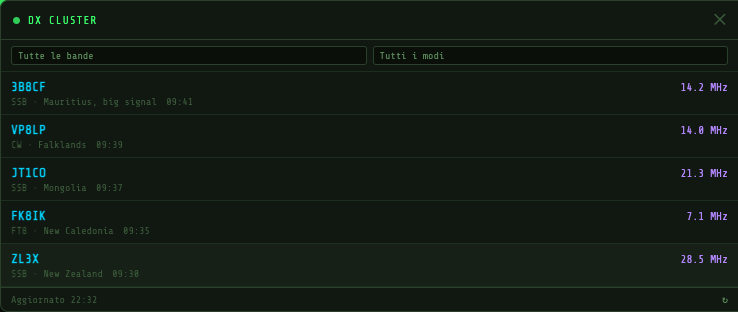
La linguetta 📡 DX CLUSTER sul bordo destro apre l'elenco degli ultimi spot. Un clic su uno spot inserisce nominativo, frequenza, banda e modo nel form e chiude il pannello: ti resta solo da premere Invio dopo il contatto.
The 📡 DX CLUSTER tab on the right edge opens the list of the latest spots. Clicking a spot fills callsign, frequency, band and mode into the form and closes the panel: you only have to press Enter after the contact.
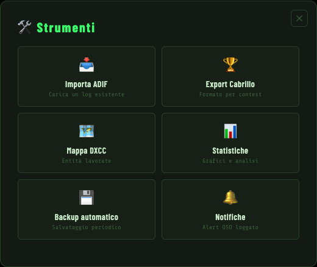
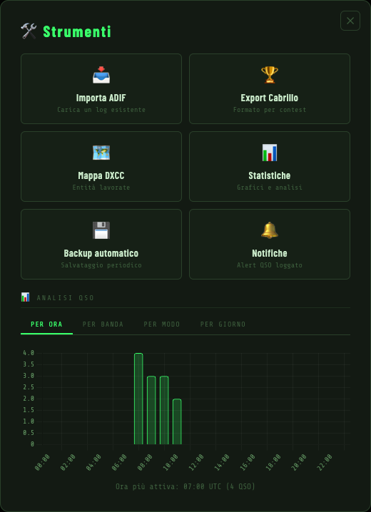
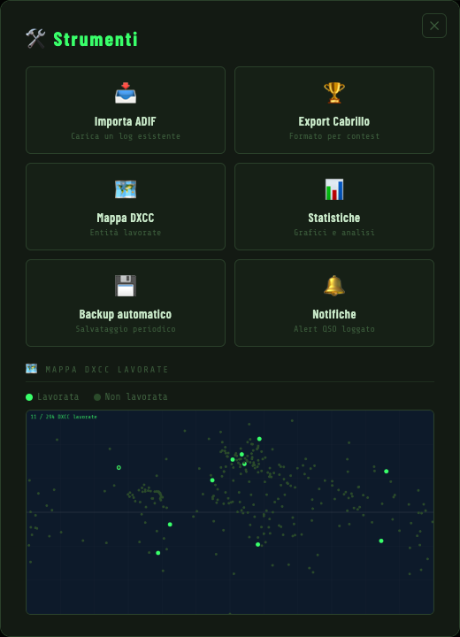
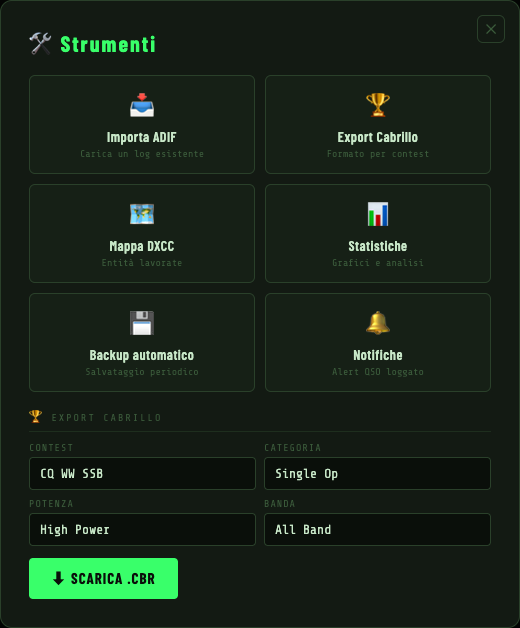
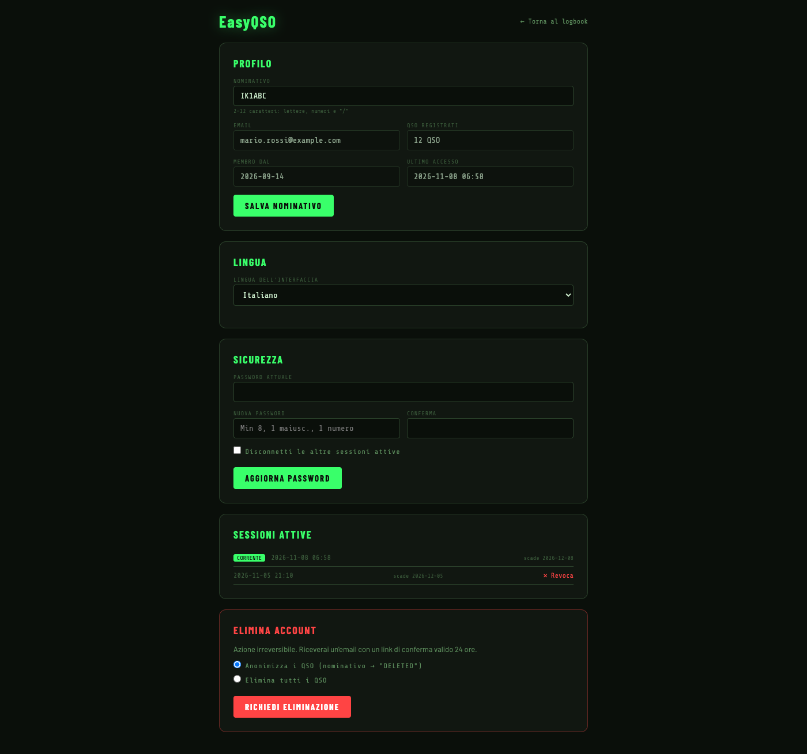
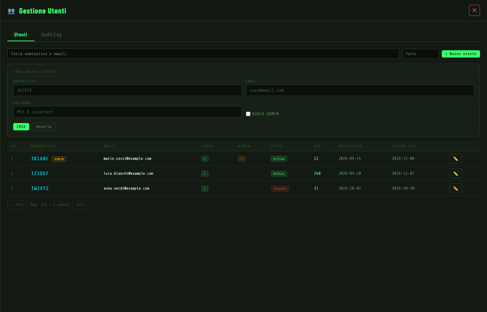
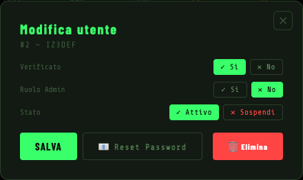
Authorization a PHP (vedi README).Authorization header to PHP (see the README).